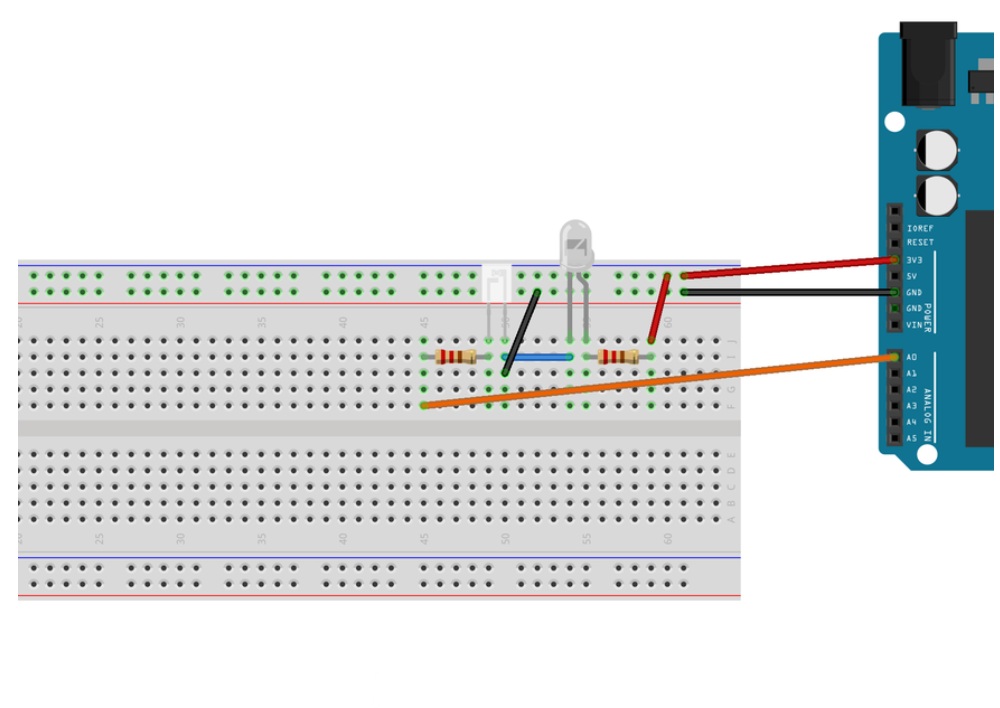
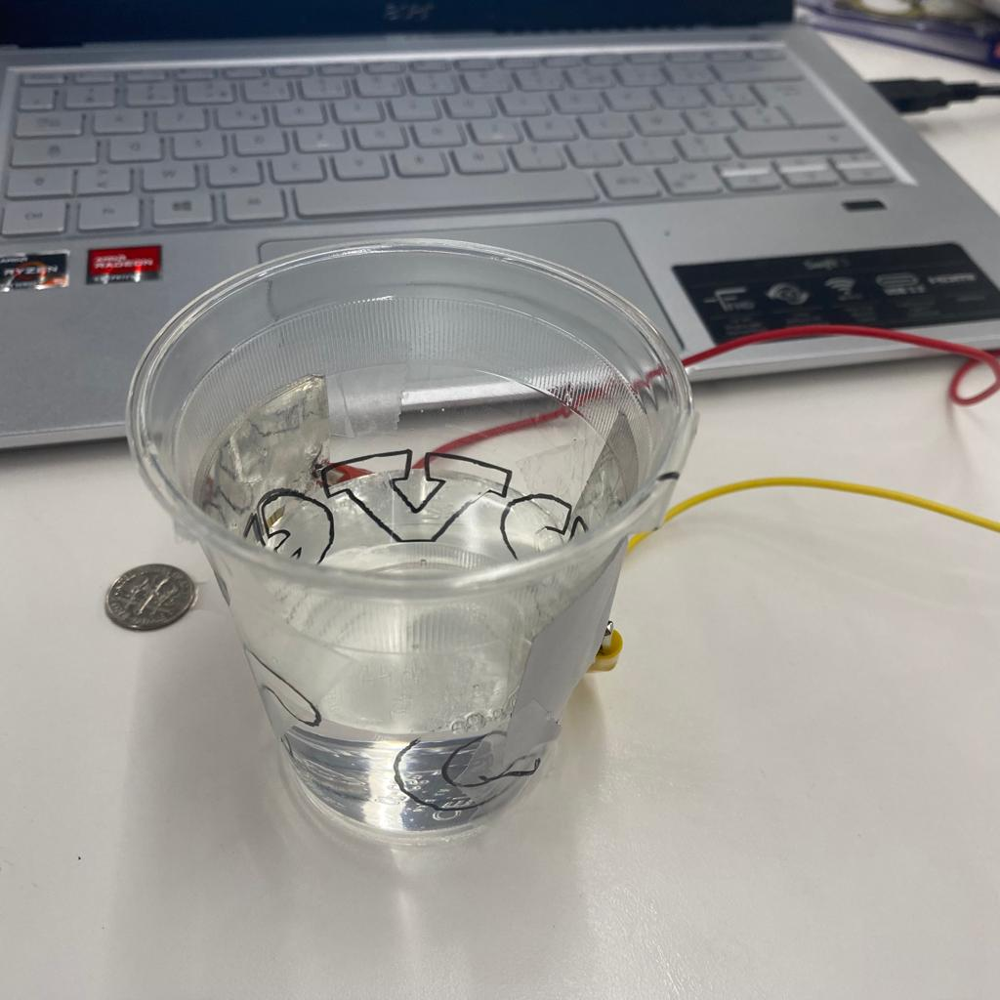

<br>
#### Week 6: Electronic Input Devices
<i> Assignment:
1. Use a sensor to measure a physical quantity with your microcontroller. Calibrate your sensor (describe the range between its min and max values, and whether/how you can control this range). Show data in the form of a table or graph.
2. Do the same as (1) with a capacitive sensor you have fabricated yourself using copper tape, aluminum foil, Velostat, etc. </i>
And here is a <a href="https://nathanmelenbrink.github.io/intro-dig-fab/06_input/index.html">Link to the original assignment page</a>
<h4>DIY IR sensors</h4>
<p>For this part of the assignment, I decided to reuse the circuit I'd already made as part of my final project. Actually, I won't be using IR sensors for my final project, but I might as well use them for this part of the assignment.
Here is the material I used, the circuit diagram and the code.</p>
<ul>
<li>Arduino Uno</li>
<li>IR transmitter</li>
<li>IR Receiver </li>
<li>Resistors 100 & 100K Ohms </li>
<li>Wires</li>
<li>LED</li>
<li>Potentiometer</li>
<li>Breadboard</li>
</ul>
<p>This time, I changed the resistors to 100ohms and 100K ohms as indicated in the course, which worked much better.</p>

<pre>
<code class="language-arduino">
const int analogInPin = A0; // Analog input pin that the receiver is attached to
int sensorValue = 0; // value read from the receiver
void setup() {
// initialize serial communications at 9600 bps:
Serial.begin(9600);
//initialize the indicator LED:
pinMode(13, OUTPUT);
}
void loop() {
// read the analog in value:
sensorValue = analogRead(analogInPin);
// print the results to the serial monitor:
Serial.print("\nsensor = ");
Serial.print(sensorValue);
//the threshold found fron analog In Out program was when object is detected, the sensor value is below 100
//set the threshold whihc you get
//the threshold varies for different sets of emitter-receiver pairs
if(sensorValue < 100){ //checks if object is there or not
digitalWrite(13, HIGH);
Serial.print("\nObject Detected");
}
else{
digitalWrite(13, LOW);
Serial.print("\nNo object in Front");
}
delay(500);
}
</code>
</pre>
<p>I realized I didn't have a ruler at home, so I had to come up with some ideas for measuring. I reused a 4cm square that I'd cut with a laser and marked a line every 4cm on an A4 sheet.</p>
<p>I then tested my sensors with different set-ups. I noticed that it picked up daylight, so I turned off my lights, and I also noticed that it picked up a sheet of paper up to 30cm, whereas after 20cm it no longer detected my hand.</p>
<p>To increase the maximum distance at which an object can be detected, simply change this value in the if loop of the code.<p>
<ul>
<li>if(sensorValue < 100){</li>
</ul>
<p>The higher the value, the further away objects can be detected by the sensor.</p>
<p>In my case, as I didn't have a measuring tape or a real ruler, I set the value to 300, which allowed the leaf to be detected between 0 and 30cm.</p>
<video width="600" height="400" controls autoplay>
<source src="videoIRsensorsquifonctionne.mp4" type=video/mp4>
</video>
<p>For example, if I set this value to 800, I could raise my sheet of paper to almost 3 times my home-made ruler.</p>
<p>I also noticed that the further away I was, the higher the analog value read. On the other hand, when I was very close to the sensor, the values hovered around 20. There may be an inversion of values, but that's why in the code the condition for an object to be detected is that the analog value read must be less than 300.</p>
<p>I then noted the analog values read as a function of the distance of my object from the sensor.</p>
<p>Remember that having set 300 in the code, the maximum distance at which an object can be detected is around 30cm.</p>
<h4>2. Capacitive Sensor: Liquid Volume Sensor</h4>
<p> For the second part of the assignment, I decided to make a liquid volume sensor.
For this I used:</p>
<ul>
<li>Arduino Uno or similar </li>
<li>Copper plates</li>
<li>Wires</li>
<li>Alligator clips</li>
<li>Breadboard</li>
<li>2x1MegaOhm Resistors</li>
<li>A cup</li>
<li>Water</li>
</ul>
<p> This is the code I used.</p>
<pre>
<code class="language-arduino">
const int tx_pin= A0;
const int conductor2Pin = A2;
const int N_samples = 100; // Number of samples to take. A higher number slows down the program but reduces the variation.
unsigned long previousTime; // Previous time for delay measurement
unsigned long startTime; // Start time of the program execution
void setup() {
pinMode(tx_pin, OUTPUT); // Pin for conductor 1
Serial.begin(9600);
previousTime = millis(); // Initialize previous time
startTime = millis(); // Record the start time
}
void loop() {
long int sum = 0;
unsigned long currentTime = millis(); // Current time
if (currentTime - previousTime >= 500) {
previousTime = currentTime; // Update previous time
for (int i = 0; i < N_samples; i++) {
digitalWrite(tx_pin, HIGH); // Apply a high voltage to conductor 1.
delayMicroseconds(100); // Delay to reach a steady state.
int highReading = analogRead(conductor2Pin); // Measure the response of conductor 2 with high voltage.
digitalWrite(tx_pin, LOW); // Set the voltage to zero on conductor 1.
delayMicroseconds(100); // Delay to reach a steady state.
int lowReading = analogRead(conductor2Pin); // Measure the response of conductor 2 with low voltage.
int difference = highReading - lowReading; // The desired response is the difference between the two readings.
sum += difference; // Sum up the measurements.
}
Serial.println(sum);
}
// Check if 45 seconds have passed since the start
if (currentTime - startTime >= 45000) {
Serial.println("End of the program");
while (true) {
// Infinite loop to stop the program
}
}
}
</code>
</pre>
<p>I programmed the display of measured values every half-second for 45 seconds. I did this because it's impossible to zoom out on the serial plotter or copy and paste all the values from the serial monitor at once. I know the possibility exists but I couldn't do it. In any case, I didn't spend enough time on it. I then exported the values displayed in the serial monitor to excel where I built a graph.</p>
<p>I started with an empty glass of water. I then filled it halfway and then completely. On the graph, you can clearly see the different levels.I wish I had a measuring glass so I could really make a trend curve.</p>

<p>I'm going to have to start having nicer codes with classes etc.</p>